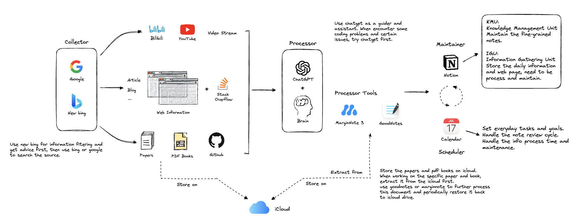

Workflow in the era of LLM
在大语言模型时代，我们的学习和工作方式都有了很大的变化。依赖于生成式AI的强大能力，当前的LLM已经成为了各种APP、甚至操作系统的一部分。ChatGPT以及new bing的出现，展现出LLM的可能性。在写代码、学习新知识、撰写文档、归纳总结、阅读文献等众多任务中，可以成为很智能的Copilot。
之前学习的流程十分的复杂，东一块西一块，被各种所谓的“生产力”APP迷的眼花缭乱。我觉得也是时候总结一个对我而言高效的学习流程了。这篇博客主要以我为视角，介绍了我的生产力模型。
Study Flow

StudyFlow主要分为四个部分：Collector，Processor，Maintainer以及Scheduler。下面首先对各个部分做介绍，然后再整体叙述整个流程。
Collector
这一部分是收集器，收集信息来源的两个主要方面就是利用Google搜索引擎和New bing搜索引擎。首先对于一些想要了解的问题，可以先咨询New bing，让其对网络的信息进行过滤，对提供的网页链接快速浏览。也可以用Google和new bing作为纯搜索引擎。
Collector中检索出的信息分为三类：
- 流媒体视频信息：包括自媒体视频、网络公开课。此类信息是经过他人理解转述的信息。理解难度低，信息准确度不高。
- 博客、文章信息：是相对于视频动态信息的静态信息。也是经过他人理解转述的信息。理解难度低，但信息准确度不高。
- Paper、书籍、代码信息：相对于前两者，此类信息更权威、更精确和精准。理解难度高，信息准确度高。
针对前两类信息（流媒体和博客），由于理解难度低，在深入学习一个问题之前，可以先检索类似的信息。通过观看视频和阅读博客，对将要学习的内容建立起感性全局的认知，这些信息可以先缓存到Maintainer的ICU（Information Cache Unit）中，在每日的总结和回顾中将有用的信息维护进KMU）。
对于Paper、书籍、代码类的信息：该类信息理解难度高，处理起来费时费力。保存到icloud中，便于跨平台检索。
Processor
信息处理器。主要靠自己的理解和ChatGPT的辅助。对于ChatGPT而言，在编程和相关技术领域的回答还是比较正确的，当然不排除胡诌的可能性，需要通过实验和对比网上的问题进一步验证。遇到一些细节问题，可以将ChatGPT作为一个耐心的助手来询问，尽管有时候回答是错误的，但也能启发一些理解的思路，说出来问题和他人对话，比自己一个人想的效果在某些情况下要好很多。
对于流媒体和文章类的信息，需要自己理解将这些内容归纳和总结。
对于Paper和书籍类的信息，则需要用一些处理工具（当然，文章类和媒体类也可以用，主要是帮助自己理解）。
MarginNote3 十分擅长创建一本书的思维导图，并提供了便捷的跳转功能。可以将整本电子书的内容结构化，在回顾思维导图的时候，可以点击每一块来快速访问原文。这个软件可以处理书籍。
但是，人们总是喜欢写写画画。在ipad的上，MarginNote对于书写的体验并不是很好。GoodNotes可以说是书写体验极佳的一款笔记软件。可以用它处理Paper，在Paper上勾画做笔记。
这两款软件的资源来自于icloud，icloud是在Collector阶段获取的。
icloud与苹果的搜索是联动的，而且搜索速度也很快。如果想看一个文章的笔记还要再打开GoodNotes等，相当麻烦。可以采用的策略就是把做好笔记的Paper覆盖原有的内容。
Maintainer
维护器的本质就是存储信息和数据的数据库。这里采用的是Notion作为数据管理中心。原因是它可以在任何平台访问，包括在Web端，没有硬件限制，随时随地取用和检索。
我在Notion创建KMU和ICU两个page。KMU负责结构化的组织和管理笔记和知识，需要使用者主动的输出和维护。ICU则是快速缓存每天的Idea和获取的原始信息（raw info），需要周期性的被processor处理和固化到KMU才能变成有用的信息。
Scheduler
调度器的工作是最重要的。当把信息处理好并固化到你的Maintainer当中，放在那里不动是不管用的。你需要对相关信息即使的更新维护和复习，加深对这些东西的理解，反复提高KMU内容的可理解性和可阅读性。
我经常遇到的问题是：当我学习某个领域的信息，大脑在这个语境之下，理解知识后，写笔记的过程中就会主动忽略掉某些自认为已经清晰的细节，导致写出来的笔记和内容并不连贯。这就导致，当一段时间没复习时，再回顾这个笔记，有很多地方读起来不通顺，并且很多细节又不理解了，还要花大量时间重新理解和推导。
解决这个问题的方法有两个：
- 定期的复习，始终让大脑熟悉这个领域的语境下
- 周期性的维护，提升笔记阅读的流畅性和可理解性
这就需要一个调度器来管理日常的复习和任务（当然，最最重要的还是个人的执行力）。
调度器使用的是苹果的calendar，可以实现iphone、watch、mac之间的同步提醒功能。我把它当作个人的日常规划软件，主要是指定计划和提醒。
Project Flow
Project包括电子设计项目、大型程序项目、难度高的编程任务以及课程Lab等。这类Project的特点是复杂度高，需要很强的分层设计来降低任务的复杂度。如果一头黑的去完成这类任务时，成功率很低，即使成功，做出来的项目的可维护性、可读性和可扩展性也绝对不高。
因此，在开始任务前，对任务建立一个high-level角度的理解，再通过细粒度的划分层级结构，将抽象思想融合进去，能够全方面提高项目的质量和成功率。
同时，设置相关的Deadline，不断推进任务也至关重要。
High-level Understanding
对一个技术或项目的高层理解，建立在直觉上。可以用通俗易懂的语言去描述它是这个阶段的目标。这也是学习的过程，因此可以采用Study Flow的流程，首先扫去知识盲区。
扫去知识盲区之后，下一步就是通过画草图的形式，将概念和架构可视化，清晰的表述不同组件和模块之间的关系。
Divide and Conquer && Abstract
分而治之和抽象是解决复杂任务的关键。在设计系统时，首先仔细思考如果将目标抽象、并划分为不同组件；进一步考虑每个组件之间的关系是什么，为了实现high-level的效果，如何分配每个组件的功能。
Implementation
这是最后一步，采用各种不同的技术和数据结构、算法，实现每一个功能。
在project开始时，首先要从coarse-grain和fine-grain的角度理解系统，general overview的直觉要有，技术细节也要有。尝试用抽象的方式，对需要的对象抽象，并探索抽象出的组件之间的关系。
之后就是项目的实时推进过程，从项目层面进行任务划分，和时间上进行任务划分（因为不可能一天就写完项目）。每天完成分配好的项目后，因为面对的是一个复杂系统，要对当前所完成的功能和在全局视野中的位置做一个标定，意识到自己在哪，该干什么，然后对明日的任务或之后的任务进一步划分。